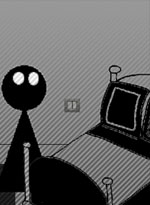
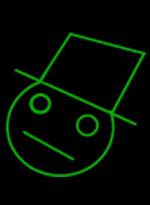
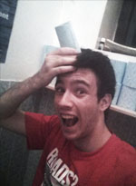
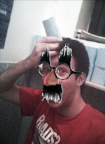
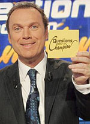
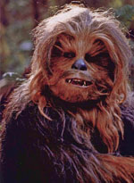

- Développeur : Dell'Bouv Team
- Sortie : Troisième à gauche
- Genre : Chef d'oeuvre vidéoludique
- Multijoueur : En local sur le même ordi et même écran et même souris
- Plate-formes : Windows et OS X / Linux en pré-alpha
- Prix : On vous donne de l'argent !

Le Passionnant Mais Pas Trop Jeu D'Aventure Textuel Illustré
Aussi nommé A Game, ce jeu est la meilleure expérience vidéoludique que vous puissez avoir : Un scénario plein de twists, des graphismes époustouflants, un gameplay révolutionnaire, des cheveux ultra réalistes, un monde ouvert gigantesque et des twinkies. Vous incarnez You (non pas vous, lui), un jeune héros voulant simplement se rendre au lycée comme tous les matins mais il va vivre une grande aventure sans même boire de Coca Cola Zéro ni connaître un grand magicien barbu !
Quelques avis

Licinius
Développeur du jeu (pas Maxime Bouveron) voulant rester anonyme
« Ce n'est pas parce que je suis le développeur de ce jeu que je pense qu'il est génial, non, non, bien au contraire c'est plus un avis critique que je porte sur ce chef d'oeuvre, ce monument du jeu vidéo, cet hymne à l'art. En effet, j'arrive à prendre un certain recul quant à mon jeu et à le comparer aux autres jeu développés par des sous-me#@'&. Après, c'est une histoire de talent, ou on l'a, ou on ne l'a pas. » Avertissement : Ce témoignage a peut-être été alterné par l'autre développeur de la Team, par jalousie.

Maxime Bouveron
Deuxième développeur du jeu, n'ayant quasiment rien foutu
« Bon, qu'on soit clairs, le jeu, j'ai pas fait grand chose dessus du coup mon avis sera plutôt objectif : Il est parfait. Sérieusement, même si mon collègue n'est pas le meilleur développeur du monde (très loin même), il a fait du bon boulot, il avançait assez vite et j'avais presque pas le temps de tester les nouveautés qu'il ajoutait entre ma sieste et ma procrastination habituelle » Avertissement : Ce témoignage a peut-être été alterné par Maxime lui même pour se rendre intéressant.

Jean-Edouard De La Grossepalette
Totalement pas le deuxième développeur du jeu
« Très très bon jeu, je dois dire que les DEUX développeurs on fait du très bon boulot, jusque dans les détails. J'aime énormément l'humour du jeu, je ne pense pas que ce soit le principal développeur qui s'en soit chargé, ça semble d'un bien trop haut niveau, sûrement le deuxième développeur accusé à tort de fénéantisme, quel génie ce grand et bel homme qui n'est absolument en aucun cas lié à moi ! » Avertissement : Ce témoignage est peut-être un fake très très bien réussi.

Julien Lepers
Présentateur le jour, homme chauve-souris la nuit
« Top ! Je suis un excellent jeu d'aventure textuel illustré, j'ai été développé par deux Terminales S-SI dans le cadre du projet de fin d'année de spé ISN, je suis, je suis, je suuuuiiis ?
Vous dites ? Candy Crush?
C'est non.
Oui? Le Passionnant Mais Pas Trop Jeu D'Aventure Textuel Illustré?
AH OUAIS AH OUI OUI OUI OUI JE DIS OUI OUI OH OUI ! »

Chewbacca
Portugais qui traîne toujours avec Indiana Jones
« RAAAAAAAAAAaaAAAAAAAAAAAAAAAAAAaaaaaaaaaaaaaAAAArrRRRRaaaaaaaaaaaaaaaaAAAAAAAAAAAAAAAAAAAAAAAAaaaaaaaaaaaaaaaaaaaaaaaaaaaaaaAAAAAAAAAAAAAAWR !! RrrraaaAAAAAAAAAaaaaaaaaarwr ! RRRRRRRRRRRAAAAAAAAAAAAAAAAAAAAAAAAAAAAAAAAAAAAAAAAAAAAAAAAAAAAAAAAAAAAAAAAAAAAAAAAAAAARRRRRWWWRRRR !! RaaaaaaaaaaAAAAAAAAAAAaaaaAAAAAAAAAaaarwwrrrrAAAAAaaaaaaaaaaaaaarwwr. C'est tout ce que j'ai à dire. »